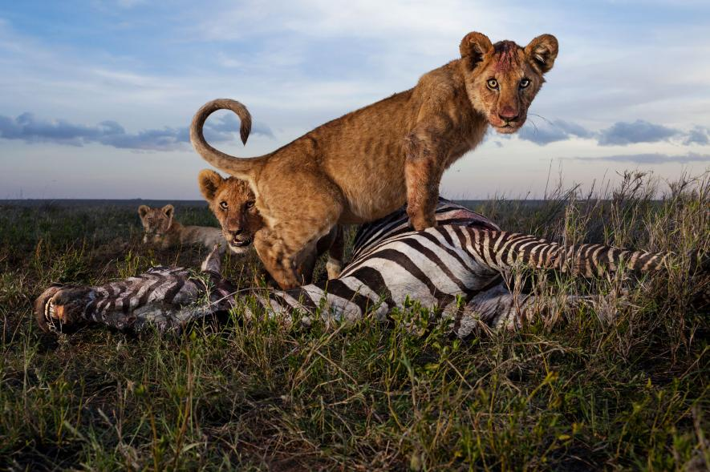

Kingdom:
Animalia
Phylum:
Chordata
Class:
Mammalia
Order:
Carnivora
Suborder:
Feliformia
Family:
Felidae
Genus:
Panthera
Species:
P. leo
The lion (Panthera leo) is a species in the Felidae family and a member of the genus Panthera. The commonly used term African lion collectively denotes lion populations in Africa. With some males exceeding 250 kg (550 lb) in weight,[6] it is believed to be second-largest living cat after the tiger, in the wilderness. In ancient times, the modern lion's range was in most of Africa, including North Africa, and across Eurasia from Greeceand southeastern Europe to India. In the late Pleistocene, the lion was the most widespread large land mammal after humans; Panthera leo spelaea lived in northern and western Europe, and Panthera leo atrox in the Americas from the Yukon River to Peru